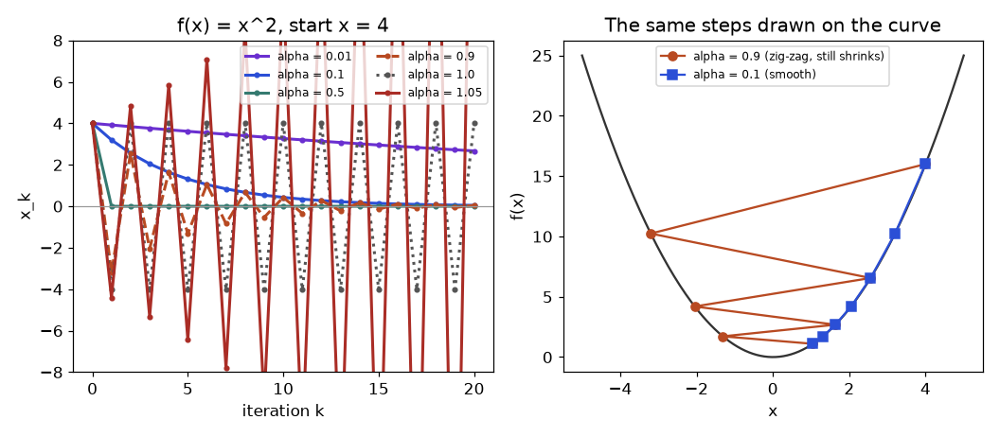
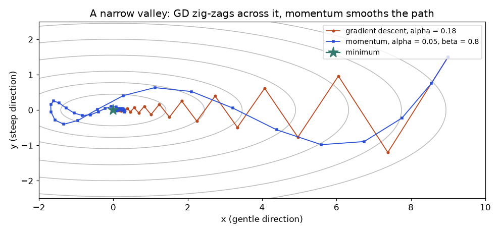
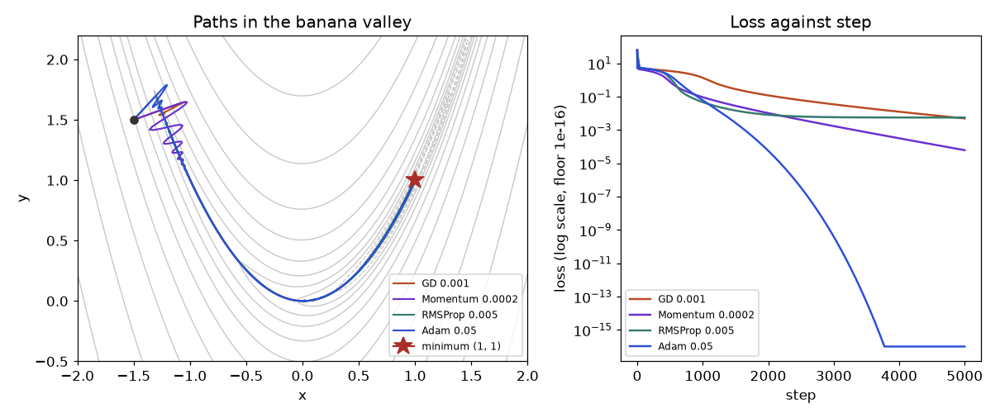
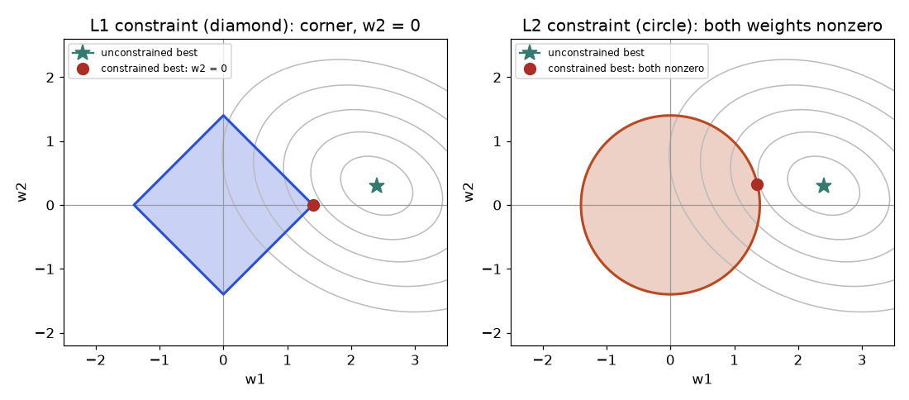
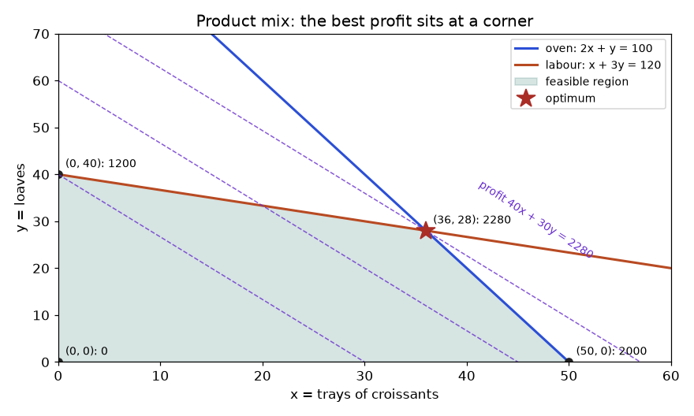

Your delivery company asks you to predict the delivery time of each parcel from distance, traffic and the number of stops. You write a linear model with three weights, a loss that measures how wrong the predictions are, and a loop that nudges the weights to make the loss smaller. On Monday the loop works and the loss falls smoothly. On Tuesday you add a feature, the square footage of the warehouse, whose values are in the thousands, and the loss shoots up to 1038 and then prints nan. You halve the learning rate, and now it works but takes four hours. A colleague says "just use Adam" and it trains in four minutes, and nobody can tell you why.
This chapter explains why. Almost everything in data science and AI is the same move: define a number that says how bad the current choice is (the loss), then search for the choice that makes it small. That search is optimization. You will build gradient descent from a Taylor expansion, hand-iterate it on small functions, prove when it converges and how fast, see why badly scaled features make it crawl, and then climb the ladder that leads to the optimizers used to train every modern neural network: momentum, RMSProp, Adam and AdamW. You will also learn the second-order and constrained tools (Newton, BFGS, Lagrange and KKT conditions, duality), the linear programs that run logistics and production planning, and the practical methods for searching hyperparameters.
After the chapter you will be able to: test whether a problem is convex; run gradient descent, momentum and Adam by hand and in NumPy from scratch; choose a learning rate and a schedule with reasons; diagnose zig-zagging, divergence and ill-conditioning; use scipy.optimize for BFGS, constrained problems and linear programs; explain why L1 gives sparse weights; and answer the optimization questions that appear in data science interviews. The running examples are the delivery-time regression and a small bakery that must decide how much to produce. This chapter builds on derivatives and Taylor series (Chapters 10 and 11), gradients and Hessians (Chapter 12), the chain rule (Chapter 13) and eigenvalues (Chapter 8).
Every optimization problem has an objective function f (the number to make small, also called loss, cost or error), variables x (the things you may change: weights, prices, quantities) and optionally constraints (rules the variables must obey, such as "x ≥ 0" or "total hours ≤ 100"). We write it as
Maximizing is the same problem in disguise: maximize f(x) is minimize −f(x). So we only ever talk about minimizing. A point x* is a global minimum if f(x*) ≤ f(x) for every allowed x. It is a local minimum if that holds only for x close to x*.
| Problem | Variables | Objective | Constraints |
|---|---|---|---|
| Linear regression | weights w | mean squared error | none |
| Logistic regression | weights w | cross-entropy | none |
| Lasso regression | weights w | squared error | ‖w‖1 ≤ t (or a penalty) |
| Bakery product mix | trays of each product | profit (maximize) | oven hours, labour hours, x ≥ 0 |
| Neural network | millions of weights | cross-entropy over data | none (but the loss is not convex) |
| Hyperparameter search | learning rate, depth, ... | validation error | ranges |
Take f(x) = x4 − 3x2 + x. Its slope is f′(x) = 4x3 − 6x + 1. The slope is zero at three places. Two are minima (near x = −1.30 and x = 1.13) and one is a hill between them. At x = −1.3008 the function value is f ≈ 2.863 − 5.076 − 1.301 = −3.514, and at x = 1.1309 it is f ≈ 1.636 − 3.837 + 1.131 = −1.070. Both are local minima, but only the left one is global. Gradient descent started on the left side of the hill ends in the left valley and gradient descent started on the right ends in the right valley. The code confirms it.
import numpy as np
def f(x): return x**4 - 3*x**2 + x
def df(x): return 4*x**3 - 6*x + 1
for x0 in (-2.0, 2.0):
x = x0
for _ in range(200):
x = x - 0.01 * df(x) # plain gradient descent, step 0.01
print(f"start {x0:+.1f} -> x = {x:+.4f}, f(x) = {f(x):+.4f}")start -2.0 -> x = -1.3008, f(x) = -3.5139
start +2.0 -> x = +1.1309, f(x) = -1.0702A convex set is a set where the straight segment between any two of its points stays inside the set. A disk is convex, a filled square is convex, a line is convex. A ring (annulus) is not: two points on opposite sides of the hole have a segment passing through the hole. The union of two separate disks is not convex either.
Problem 14.1.1 Check the definition for f(x) = x2 with x = 1, y = 3, t = 0.5, and then for f(x) = −x2.
| Left side (x²) | t·x + (1−t)·y = 0.5·1 + 0.5·3 = 2, so f(2) = 4 |
|---|---|
| Right side (x²) | 0.5·f(1) + 0.5·f(3) = 0.5·1 + 0.5·9 = 5 |
| Compare | 4 ≤ 5, the chord is above the curve, consistent with convexity |
| Now −x² | Left: f(2) = −4. Right: 0.5·(−1) + 0.5·(−9) = −5 |
| Compare | −4 ≤ −5 is false, so −x² is not convex (it is concave: the chord is below the curve) |
Checking the definition for every pair of points is impossible, so we use calculus. For one variable: f is convex on an interval if f″(x) ≥ 0 everywhere on it. Curvature that never turns negative means the slope never decreases, so the graph bends upward only. For several variables the second derivative becomes the Hessian matrix H (Chapter 12), the matrix of all second partial derivatives. The test is: f is convex if H(x) is positive semi-definite (PSD) at every x, meaning all eigenvalues of H are ≥ 0 (Chapter 8). For a quadratic form f(x) = ½xᵀAx the Hessian is just A, the same everywhere.
Problem 14.1.2 Is f(x, y) = x2 + xy + y2 convex? Is g(x, y) = x2 + 3xy + y2?
| Hessian of f | fxx = 2, fxy = 1, fyy = 2, so H = [[2, 1], [1, 2]] |
|---|---|
| Eigenvalues | Trace 4, determinant 4 − 1 = 3. Solve λ² − 4λ + 3 = 0, so λ = 1 and λ = 3 |
| Verdict f | Both ≥ 0 (in fact > 0), so f is convex, even strictly |
| Hessian of g | gxx = 2, gxy = 3, gyy = 2, so H = [[2, 3], [3, 2]] |
| Eigenvalues | Trace 4, determinant 4 − 9 = −5. λ² − 4λ − 5 = 0, so λ = 5 and λ = −1 |
| Verdict g | One eigenvalue is negative, so g is not convex: it curves down along the direction (1, −1), a saddle |
import numpy as np
# Hessians of three quadratic functions f(x, y) = 0.5 * [x y] H [x y]^T
mats = {
"x^2 + x*y + y^2": np.array([[2.0, 1.0], [1.0, 2.0]]),
"x^2 + 3*x*y + y^2": np.array([[2.0, 3.0], [3.0, 2.0]]),
"x^2 + y^2": np.array([[2.0, 0.0], [0.0, 2.0]]),
}
for name, H in mats.items():
eig = np.linalg.eigvalsh(H) # eigenvalues of a symmetric matrix
verdict = "convex" if eig.min() >= 0 else "NOT convex"
print(f"{name:28s} eigenvalues {np.round(eig, 3)} -> {verdict}")x^2 + x*y + y^2 eigenvalues [1. 3.] -> convex
x^2 + 3*x*y + y^2 eigenvalues [-1. 5.] -> NOT convex
x^2 + y^2 eigenvalues [2. 2.] -> convexThat one fact is why convex problems are called "easy": any method that goes downhill and stops where the slope is zero is guaranteed to have found the best answer. Convex functions you meet constantly: squared error of a linear model, cross-entropy of logistic regression (as a function of the weights), the hinge loss of an SVM, the L1 and L2 norms, and sums of convex functions with non-negative weights, so "loss + λ·penalty" stays convex. The loss of a neural network with ReLU units is not convex in its weights, which is the reason deep learning needs the careful tricks of the later sections.
Convexity has a first-order characterization that explains gradient descent: f is convex exactly when f(y) ≥ f(x) + ∇f(x)·(y − x) for all x, y, so the tangent plane is a global lower bound. At a point where ∇f(x*) = 0 this says f(y) ≥ f(x*) for all y: a zero gradient is automatically a global minimum. Operations preserving convexity: a non-negative sum, a maximum, and composition with a linear map f(Ax + b). That is why a lasso objective (squared error plus λ·‖w‖1) is convex even though the absolute value has a kink and no derivative at 0. Interview question: "is k-means convex? is PCA convex?" Neither objective is convex in its raw variables, yet PCA is solved exactly through the SVD (Chapter 9) and k-means converges only to a local optimum, which is why n_init restarts exist.
Near a point x, a function behaves like its tangent (Chapter 11): f(x + d) ≈ f(x) + ∇f(x)·d, where d is a small move. We want f(x + d) as small as possible for a move of fixed length ‖d‖. By the Cauchy-Schwarz inequality (Chapter 5), ∇f·d ≥ −‖∇f‖·‖d‖, with equality when d points exactly opposite to the gradient. So the steepest-descent direction is −∇f(x), and with a step length α (the learning rate) we get
That is the whole algorithm: compute the gradient, take a step against it, repeat. The linear approximation is only trustworthy for small steps, which is why α cannot be arbitrarily large. Add the next Taylor term to see how large: f(x − αg) ≈ f(x) − α‖g‖² + ½α² gᵀHg, where g = ∇f(x) and H is the Hessian. The loss goes down only if α‖g‖² > ½α² gᵀHg, i.e. if α < 2‖g‖²/(gᵀHg). The curvature gᵀHg is what limits the step.
Problem 14.2.1 Run gradient descent on f(x) = x² from x0 = 4 with α = 0.1.
| Gradient | f′(x) = 2x, so the update is x ← x − 0.1·2x = 0.8x |
|---|---|
| Step 1 | x1 = 0.8 · 4 = 3.2 |
| Step 2 | x2 = 0.8 · 3.2 = 2.56 |
| Step 3 | x3 = 0.8 · 2.56 = 2.048 |
| Step 4 | x4 = 0.8 · 2.048 = 1.6384 |
| Step 5 | x5 = 0.8 · 1.6384 = 1.31072 |
| Pattern | xk = 0.8k · 4, a geometric sequence (Chapter 4) that shrinks by 20% per step |
Now change only the learning rate. With α = 0.5 the factor is 1 − 2·0.5 = 0, so x1 = 0 in one step. With α = 1.0 the factor is −1, so the iterates are 4, −4, 4, −4, forever: the walker jumps from one side of the bowl to the mirror point and never improves. With α = 1.1 the factor is 1 − 2.2 = −1.2, so the iterates are 4, −4.8, 5.76, −6.912, ...: each jump lands higher on the wall than before and the loss explodes. The code reproduces all four.
# Gradient descent on f(x) = x^2 with different learning rates
def run(alpha, x0=4.0, steps=5):
xs = [x0]
for _ in range(steps):
xs.append(xs[-1] - alpha * 2 * xs[-1]) # f'(x) = 2x
return xs
for alpha in (0.1, 0.5, 1.0, 1.1):
print(f"alpha={alpha}:", [round(v, 4) for v in run(alpha)])alpha=0.1: [4.0, 3.2, 2.56, 2.048, 1.6384, 1.3107]
alpha=0.5: [4.0, 0.0, 0.0, 0.0, 0.0, 0.0]
alpha=1.0: [4.0, -4.0, 4.0, -4.0, 4.0, -4.0]
alpha=1.1: [4.0, -4.8, 5.76, -6.912, 8.2944, -9.9533]
How to read it: the left panel is a race to the line x = 0. The purple curve (α = 0.01) barely moves, blue (0.1) glides, teal (0.5) arrives in one jump, orange (0.9) zig-zags across zero while still shrinking (the factor is −0.8), gray (1.0) bounces forever between 4 and −4, and red (1.05) escapes outwards. The right panel shows why: with α = 0.9 each step crosses the valley floor and lands on the other wall at a slightly lower height.
inf and nan. Signs of a too-small rate: the loss falls, but so slowly the curve looks flat.Take the bowl f(x, y) = ½(x² + 10y²). Its gradient is (x, 10y). It is steep in the y direction and gentle in the x direction. Start at (4, 2) with α = 0.15.
Problem 14.2.2 Compute the first three iterations.
| Update rule | x ← x − 0.15·x = 0.85x and y ← y − 0.15·10y = y − 1.5y = −0.5y |
|---|---|
| Step 1 | (0.85·4, −0.5·2) = (3.4, −1) |
| Step 2 | (0.85·3.4, −0.5·(−1)) = (2.89, 0.5) |
| Step 3 | (0.85·2.89, −0.5·0.5) = (2.4565, −0.25) |
| Observe | y flips sign every step (zig-zag across the steep direction) but its size halves. x shrinks only by 15% per step, so x is the slow coordinate and it decides how long we wait |
import numpy as np
# f(x, y) = 0.5 * (x^2 + 10 y^2), gradient = (x, 10 y)
def grad(p): return np.array([p[0], 10 * p[1]])
p = np.array([4.0, 2.0])
alpha = 0.15
print(0, p)
for k in range(1, 6):
p = p - alpha * grad(p)
print(k, np.round(p, 4))0 [4. 2.]
1 [ 3.4 -1. ]
2 [2.89 0.5 ]
3 [ 2.4565 -0.25 ]
4 [2.088 0.125]
5 [ 1.7748 -0.0625]The quadratic f(x) = ½ a x² with a > 0 has gradient a·x, so the update is xk+1 = xk − α a xk = (1 − αa)·xk. Applying it k times: xk = (1 − αa)k·x0. A geometric sequence goes to 0 exactly when its ratio satisfies |1 − αa| < 1, i.e. −1 < 1 − αa < 1, which rearranges to 0 < α < 2/a. The fastest choice makes the ratio zero: α = 1/a, which jumps to the minimum in one step (this is the α = 0.5 case for a = 2). Here a is the curvature f″, so the rule reads: stay below two divided by the curvature.
Now take a general quadratic f(x) = ½xᵀHx − bᵀx with H symmetric positive definite. Its minimizer x* solves Hx* = b. Let ek = xk − x* be the error. Then ∇f(xk) = Hxk − b = Hek and the update becomes ek+1 = (I − αH)ek. Write H = QΛQᵀ (Chapter 8), where the columns of Q are orthonormal eigenvectors and Λ holds the eigenvalues λ1, ..., λn. In the rotated coordinates z = Qᵀe the update decouples completely: zi ← (1 − αλi)·zi. So an n-dimensional quadratic is n independent 1D problems, one per eigen-direction, each with its own curvature λi.
All of them must converge, so we need α < 2/λmax. The slowest direction is the one with the smallest curvature λmin. Call μ = λmin, L = λmax. The worst-case shrink factor per step is ρ(α) = max(|1 − αμ|, |1 − αL|). It is smallest when the two terms are equal in size and opposite in sign: 1 − αμ = −(1 − αL), giving α = 2/(μ + L) and
For our 2D example μ = 1, L = 10. With α = 0.15 the factors are |1 − 0.15| = 0.85 and |1 − 1.5| = 0.5, so ρ = 0.85, matching the x coordinate that shrank 15% per step. The best step 2/11 ≈ 0.1818 gives ρ = 9/11 ≈ 0.818, only a little better. To shrink the error by a factor ε we need k steps with ρk ≤ ε, i.e. k ≥ ln(1/ε)/ln(1/ρ). For large κ, ln((κ+1)/(κ−1)) ≈ 2/κ, so k ≈ (κ/2)·ln(1/ε): the number of steps grows in proportion to the condition number.
import numpy as np
# Quadratic with Hessian eigenvalues mu (smallest) and L (largest)
for mu, L in ((1.0, 10.0), (1.0, 100.0), (1.0, 1000.0)):
kappa = L / mu
alpha = 2 / (mu + L) # best fixed step
rho = (kappa - 1) / (kappa + 1) # per-step shrink factor
steps = np.log(1e-6) / np.log(rho) # steps to shrink error 1,000,000 times
print(f"kappa={kappa:6.0f} rho={rho:.5f} steps for 1e-6: {steps:8.1f}")kappa= 10 rho=0.81818 steps for 1e-6: 68.8
kappa= 100 rho=0.98020 steps for 1e-6: 690.8
kappa= 1000 rho=0.99800 steps for 1e-6: 6907.8The condition number measures how stretched the bowl is. The level curves of a quadratic are ellipses whose axis lengths are proportional to 1/√λi: a large κ means a long thin ellipse, a canyon. The gradient is perpendicular to the level curve, which in a canyon points almost straight across it rather than along it. A step big enough to make progress along the canyon (limited by α < 2/L) overshoots across it. The result is the zig-zag of Figure 14.2: huge effort across the canyon, tiny progress along its floor.

How to read it: the grey ellipses are level curves of equal loss, the star is the minimum. Each dot is one iterate. The orange path alternates above and below the floor of the valley because the y-direction factor is 1 − 0.18·10 = −0.8: it flips sign every step. The x-direction factor is 0.82, so the path creeps left slowly. Momentum (blue) spirals in with fewer wasted sideways moves.
For linear regression with mean squared error the Hessian is 2XᵀX/n, so the condition number is set by the features. If one feature is square footage (about 500 to 3,000) and another is the number of rooms (1 to 5), the second moment matrix has one huge eigenvalue and one small one, so κ is enormous. Standardizing (subtract the mean, divide by the standard deviation) puts every feature on the same scale and brings κ close to 1.
import numpy as np
rng = np.random.default_rng(0)
size = rng.uniform(500, 3000, 200) # square feet
rooms = rng.integers(1, 6, 200).astype(float)
X = np.column_stack([size, rooms])
def condition(X):
H = X.T @ X / len(X) # Hessian of mean squared error is 2 * this
e = np.linalg.eigvalsh(H)
return e.max() / e.min()
Xs = (X - X.mean(axis=0)) / X.std(axis=0) # standardise: mean 0, std 1
print("condition number raw: ", round(condition(X), 1))
print("condition number standardised:", round(condition(Xs), 3))condition number raw: 1334566.1
condition number standardised: 1.259That drops κ from about 1.3 million to 1.26, so gradient descent goes from needing millions of steps (about (κ/2)·ln(106) ≈ 9 million) to a handful (ρ = 0.26/2.26 ≈ 0.115 per step, so about 6 steps for a millionfold improvement). This is the real reason every ML tutorial says "scale your features" and why batch normalization and layer normalization exist inside deep networks: they keep the curvature of each layer similar.
mean = X_train.mean(0) and std = X_train.std(0) computed on the training rows only, then applied unchanged to validation and test rows. Also remember to apply the same transformation at prediction time in production.StandardScaler beats any new optimizer.The decoupling argument is exact for quadratics, and every smooth function looks quadratic near a minimum (Taylor, Chapter 11), with H the Hessian there. So the eigenvalue spectrum of the Hessian at the optimum predicts the local convergence of gradient descent for any smooth loss. In deep learning the Hessian eigenvalues of a trained network are spread over many orders of magnitude, a few huge and a very large bulk near zero, which is why plain gradient descent is slow and why adaptive methods help. A condition number is also a statement about numerical stability: solving the normal equations XᵀX w = Xᵀy squares the condition number of X (κ(XᵀX) = κ(X)²), which is why practitioners prefer QR or the SVD (Chapters 7 and 9).
For a dataset of n rows the loss is an average, f(w) = (1/n)·∑ ℓi(w), where ℓi is the loss on row i. The full gradient is ∇f = (1/n)·∑ ∇ℓi. That sum is what costs time when n is a million.
| Method | Rows per step B | Cost per step | Gradient noise | Typical use |
|---|---|---|---|---|
| Batch (full) gradient descent | n | O(n·d) | none | small data, convex problems, L-BFGS |
| Stochastic gradient descent (SGD) | 1 | O(d) | very high | streaming data, theory |
| Mini-batch gradient descent | 32 to 4096 | O(B·d) | moderate | all deep learning |
Here d is the number of parameters. One pass through all the rows is an epoch. Mini-batch gradient descent does n/B updates per epoch. People say "SGD" for mini-batch methods in general.
Pick a row i uniformly at random. Its expected gradient is E[∇ℓi] = ∑ (1/n)·∇ℓi = ∇f: the single-row gradient is an unbiased estimate of the full gradient. It is noisy: with per-row gradient variance σ², a batch average of B independent rows has variance σ²/B (the standard-error rule from Statistics, Chapter 3, applied to gradients). So the noise standard deviation falls like 1/√B: batch 100 is 10 times less noisy than batch 1 but costs 100 times more per step, which is a bad trade in terms of noise per cost. This is why moderate batches on GPUs are efficient, until the hardware is saturated.
Problem 14.3.1 A model has per-row gradient standard deviation σ = 4. What is the noise (standard deviation) of the gradient estimate for B = 1, 16 and 256, and how much does each step cost relative to B = 1?
| Formula | noise = σ/√B |
|---|---|
| B = 1 | 4/√1 = 4, cost 1× |
| B = 16 | 4/√16 = 4/4 = 1, cost 16× |
| B = 256 | 4/√256 = 4/16 = 0.25, cost 256× |
| Meaning | Going from 16 to 256 rows makes each step 16× more expensive but only 4× less noisy. Beyond some size, it is better to take more steps than to average more rows |
We generate 10,000 rows from y = 2 + 3x + noise (noise standard deviation 1), so the best possible mean squared error is the noise variance, 1.0. All three runs get the same budget of 20,000 row-gradient evaluations. Full batch can take only 2 steps with that budget; mini-batch of 100 takes 200 steps; pure SGD takes 20,000 tiny steps.
import numpy as np
rng = np.random.default_rng(1)
n = 10_000
X = np.column_stack([np.ones(n), rng.normal(size=n)]) # intercept + one feature
true_w = np.array([2.0, 3.0])
y = X @ true_w + rng.normal(scale=1.0, size=n) # noise std 1
def loss(w): return np.mean((X @ w - y) ** 2)
def grad(w, idx): # gradient of the mean squared error on rows idx
Xb, yb = X[idx], y[idx]
return 2 * Xb.T @ (Xb @ w - yb) / len(idx)
def train(batch, alpha, steps):
w = np.zeros(2)
for _ in range(steps):
idx = rng.choice(n, size=batch, replace=False) if batch < n else np.arange(n)
w = w - alpha * grad(w, idx)
return w
# same budget of 20,000 row-gradients per run
for name, batch, steps in (("full batch", n, 2), ("mini-batch 100", 100, 200), ("stochastic (1)", 1, 20000)):
w = train(batch, 0.1 if batch > 1 else 0.01, steps)
print(f"{name:15s} steps={steps:6d} w={np.round(w, 3)} loss={loss(w):.4f}")full batch steps= 2 w=[0.705 1.082] loss=6.3644
mini-batch 100 steps= 200 w=[1.968 3.078] loss=0.9808
stochastic (1) steps= 20000 w=[2.055 3.175] loss=1.0027Full batch has barely started (loss 6.36, weights still far from (2, 3)). Mini-batch has nearly reached the noise floor of 1.0 (loss 0.98 is slightly below 1 only because the model has fit a few random fluctuations of this sample). Pure SGD lands at 1.0027 but its weights (2.055, 3.175) are still jittering around the truth: with a constant step size, SGD never settles exactly, it hovers in a noise ball whose radius grows with α. Decaying the learning rate (Section 14.4) shrinks that ball.
DataLoader(dataset, batch_size=64, shuffle=True). In scikit-learn, SGDRegressor and SGDClassifier use the single-row version with a decaying rate, MLPClassifier(solver="adam", batch_size=200) uses mini-batches. If memory is short, gradient accumulation sums gradients over several small batches before one update to mimic a larger batch.The noise is not only a nuisance. In a non-convex landscape it can push the iterate off a saddle point (Section 14.4), and many practitioners observe that small batches generalize slightly better than very large ones, an effect often linked to preferring wide, flat minima (Section 14.8). The cost model matters too: one pass of full-batch descent costs the same as an epoch of SGD that makes n updates. For a well-conditioned problem SGD makes real progress long before it has seen all the data once, which is the whole reason the method dominates large-scale learning. Theory says, for a smooth strongly convex loss with a decaying step size, SGD converges at rate O(1/k) in the loss, whereas full-batch gradient descent converges linearly (geometric), but each of its steps is n times more expensive. For a huge n, SGD wins in time to a "good enough" answer.
Keep a velocity v, which is an exponentially weighted sum of past gradients, and move along it:
Here β in [0, 1) is the momentum coefficient (typically 0.9) and v starts at 0. Unrolling the first line gives v = gk + βgk−1 + β²gk−2 + ...: old gradients fade geometrically, so the velocity averages roughly the last 1/(1 − β) gradients (10 for β = 0.9). If the gradient is constant, v → g/(1 − β), so β = 0.9 makes the effective step 10 times larger along consistent directions. If the gradient flips sign every step (the zig-zag), the terms cancel and v stays small. That is exactly the cure for ill-conditioned canyons.
Problem 14.4.1 Momentum on f(x) = x² (gradient 2x) with x0 = 4, α = 0.1, β = 0.9, v0 = 0. Do four steps.
| Step 1 | g = 2·4 = 8. v = 0.9·0 + 8 = 8. x = 4 − 0.1·8 = 3.2 |
|---|---|
| Step 2 | g = 6.4. v = 0.9·8 + 6.4 = 13.6. x = 3.2 − 1.36 = 1.84 |
| Step 3 | g = 3.68. v = 0.9·13.6 + 3.68 = 15.92. x = 1.84 − 1.592 = 0.248 |
| Step 4 | g = 0.496. v = 0.9·15.92 + 0.496 = 14.824. x = 0.248 − 1.4824 = −1.2344 |
| Meaning | The ball is moving fast when it passes the bottom at x = 0 and overshoots to −1.23. Gradients of opposite sign then drain the velocity and it oscillates back. Momentum trades monotone descent for speed |
# Heavy-ball momentum on f(x) = x^2, alpha = 0.1, beta = 0.9
x, v = 4.0, 0.0
alpha, beta = 0.1, 0.9
for k in range(1, 5):
g = 2 * x
v = beta * v + g
x = x - alpha * v
print(f"step {k}: g={g:.4f} v={v:.4f} x={x:.4f}")step 1: g=8.0000 v=8.0000 x=3.2000
step 2: g=6.4000 v=13.6000 x=1.8400
step 3: g=3.6800 v=15.9200 x=0.2480
step 4: g=0.4960 v=14.8240 x=-1.2344Heavy-ball momentum computes the gradient where you are, then adds the velocity. Nesterov noticed that the velocity is going to move you anyway, so measure the slope at the look-ahead point instead. With the same notation:
If the ball is about to overshoot the bottom, the look-ahead gradient already points back, so it brakes earlier. For smooth convex functions this is provably faster (rate O(1/k²) against O(1/k) for plain gradient descent; Section 14.8). Deep learning libraries implement an algebraically rearranged version (torch.optim.SGD(..., momentum=0.9, nesterov=True)) that needs just one gradient per step.
Different parameters see very different gradients: the weight of a rare word gets a gradient only occasionally, the bias gets one every step. AdaGrad divides each coordinate's step by the root of its accumulated squared gradient:
All operations are element-wise. Coordinates with large past gradients get small steps; rarely updated coordinates keep large steps. The weakness: G only grows, so the effective step size shrinks forever and learning stalls. RMSProp fixes that by replacing the sum with a moving average that forgets the old past:
With ρ = 0.9 and ε = 10−8 (a tiny number preventing division by zero). The quantity g/√s is a gradient divided by its own recent typical size, so it is always about ±1, and every parameter moves by roughly α per step regardless of how big or small its gradient is.
Adam keeps both a moving average of the gradient (first moment, like momentum) and a moving average of its square (second moment, like RMSProp):
The defaults are α = 0.001, β1 = 0.9, β2 = 0.999, ε = 10−8. The index t counts steps starting at 1.
Why bias correction? Both averages start at 0, so early on they are biased toward 0. The weights of the first t terms of mt are (1 − β1)·β1t−i and they add up to 1 − β1t, not 1. So if the gradient were a constant g, mt = (1 − β1t)·g, and dividing by (1 − β1t) restores g. At t = 1 without the correction, m1 = 0.1g and v1 = 0.001g², which are 10 and 1,000 times too small.
Problem 14.4.2 Three Adam steps on f(x) = x² (gradient 2x) from x0 = 4 with α = 0.1, β1 = 0.9, β2 = 0.999, ε = 10−8.
| t = 1 | g = 8. m = 0.1·8 = 0.8. v = 0.001·64 = 0.064. m̂ = 0.8/(1 − 0.9) = 8. v̂ = 0.064/(1 − 0.999) = 64, √v̂ = 8. x = 4 − 0.1·8/8 = 3.9 |
|---|---|
| t = 2 | g = 7.8. m = 0.9·0.8 + 0.1·7.8 = 0.72 + 0.78 = 1.5. v = 0.999·0.064 + 0.001·60.84 = 0.063936 + 0.06084 = 0.124776. m̂ = 1.5/(1 − 0.81) = 1.5/0.19 = 7.8947. v̂ = 0.124776/(1 − 0.998001) = 0.124776/0.001999 = 62.419, √v̂ = 7.9006. x = 3.9 − 0.1·7.8947/7.9006 = 3.9 − 0.09993 = 3.80007 |
| t = 3 | g = 7.6001. m = 0.9·1.5 + 0.1·7.6001 = 1.35 + 0.76001 = 2.1100. v = 0.999·0.124776 + 0.001·57.762 = 0.124651 + 0.057762 = 0.182413. m̂ = 2.1100/0.271 = 7.7860. v̂ = 0.182413/0.002997 = 60.865, √v̂ = 7.8016. x = 3.80007 − 0.1·7.7860/7.8016 = 3.80007 − 0.09980 = 3.70027 |
| Observe | Every step moved the parameter by almost exactly α = 0.1, even though the gradient (8, 7.8, 7.6) is far from 0.1. Adam steps are about α in size whatever the gradient scale. That is the main reason it is so forgiving on badly scaled problems |
import numpy as np
# Adam by hand on f(x) = x^2 (gradient 2x), start x = 4
alpha, b1, b2, eps = 0.1, 0.9, 0.999, 1e-8
x, m, v = 4.0, 0.0, 0.0
for t in range(1, 4):
g = 2 * x
m = b1 * m + (1 - b1) * g
v = b2 * v + (1 - b2) * g * g
m_hat = m / (1 - b1 ** t)
v_hat = v / (1 - b2 ** t)
x = x - alpha * m_hat / (np.sqrt(v_hat) + eps)
print(f"t={t} g={g:.4f} m={m:.4f} v={v:.6f} m_hat={m_hat:.4f} v_hat={v_hat:.4f} x={x:.6f}")t=1 g=8.0000 m=0.8000 v=0.064000 m_hat=8.0000 v_hat=64.0000 x=3.900000
t=2 g=7.8000 m=1.5000 v=0.124776 m_hat=7.8947 v_hat=62.4192 x=3.800074
t=3 g=7.6001 m=2.1100 v=0.182413 m_hat=7.7860 v_hat=60.8653 x=3.700274Weight decay shrinks every weight a little each step, θ ← θ − αλθ, to keep weights small. For plain SGD this is identical to adding an L2 penalty (λ/2)‖θ‖² to the loss, because the penalty's gradient is λθ. With Adam it is not identical: if you add λθ to the gradient, it is then divided by √v̂ like everything else, so weights with historically large gradients are decayed less, which defeats the purpose. AdamW (Loshchilov and Hutter) applies the decay directly, outside the adaptive scaling:
Typical values are λ = 0.01 to 0.1. AdamW is the default optimizer for training transformers and most modern language and vision models.
Here is one NumPy implementation of every method in this section. Each takes a gradient function and returns the whole path. Our first test surface is a ravine, f(x, y) = ½(x² + 100y²): it has condition number 100, steep in y and gentle in x. All runs start at (10, 1) and take 200 steps, with step sizes picked from a small sweep for each method.
import numpy as np
# ---- from-scratch optimisers: each takes grad(p) and returns the path ----
def gd(grad, p0, alpha, steps):
p = np.array(p0, float); path = [p.copy()]
for _ in range(steps):
p = p - alpha * grad(p); path.append(p.copy())
return np.array(path)
def momentum(grad, p0, alpha, steps, beta=0.9):
p = np.array(p0, float); v = np.zeros_like(p); path = [p.copy()]
for _ in range(steps):
v = beta * v + grad(p); p = p - alpha * v; path.append(p.copy())
return np.array(path)
def nesterov(grad, p0, alpha, steps, beta=0.9):
p = np.array(p0, float); v = np.zeros_like(p); path = [p.copy()]
for _ in range(steps):
v = beta * v + grad(p - alpha * beta * v) # gradient at the look-ahead point
p = p - alpha * v; path.append(p.copy())
return np.array(path)
def adagrad(grad, p0, alpha, steps, eps=1e-8):
p = np.array(p0, float); G = np.zeros_like(p); path = [p.copy()]
for _ in range(steps):
g = grad(p); G += g * g
p = p - alpha * g / (np.sqrt(G) + eps); path.append(p.copy())
return np.array(path)
def rmsprop(grad, p0, alpha, steps, rho=0.9, eps=1e-8):
p = np.array(p0, float); s = np.zeros_like(p); path = [p.copy()]
for _ in range(steps):
g = grad(p); s = rho * s + (1 - rho) * g * g
p = p - alpha * g / (np.sqrt(s) + eps); path.append(p.copy())
return np.array(path)
def adam(grad, p0, alpha, steps, b1=0.9, b2=0.999, eps=1e-8, wd=0.0):
p = np.array(p0, float); m = np.zeros_like(p); v = np.zeros_like(p); path = [p.copy()]
for t in range(1, steps + 1):
g = grad(p)
m = b1 * m + (1 - b1) * g
v = b2 * v + (1 - b2) * g * g
m_hat = m / (1 - b1 ** t); v_hat = v / (1 - b2 ** t)
p = p - alpha * (m_hat / (np.sqrt(v_hat) + eps) + wd * p) # wd > 0 gives AdamW
path.append(p.copy())
return np.array(path)
# ---- the ravine: f = 0.5 * (x^2 + 100 y^2), minimum at (0, 0) ----
def ravine(p): return 0.5 * (p[0] ** 2 + 100 * p[1] ** 2)
def ravine_grad(p): return np.array([p[0], 100 * p[1]])
start = [10.0, 1.0]
runs = {
"GD (alpha 0.015)": gd(ravine_grad, start, 0.015, 200),
"Momentum (0.01, 0.9)": momentum(ravine_grad, start, 0.01, 200),
"Nesterov (0.01, 0.9)": nesterov(ravine_grad, start, 0.01, 200),
"AdaGrad (2.0)": adagrad(ravine_grad, start, 2.0, 200),
"RMSProp (0.05)": rmsprop(ravine_grad, start, 0.05, 200),
"Adam (0.2)": adam(ravine_grad, start, 0.2, 200),
}
for name, path in runs.items():
print(f"{name:24s} final loss after 200 steps: {ravine(path[-1]):.3e}")GD (alpha 0.015) final loss after 200 steps: 1.184e-01
Momentum (0.01, 0.9) final loss after 200 steps: 1.592e-08
Nesterov (0.01, 0.9) final loss after 200 steps: 3.229e-09
AdaGrad (2.0) final loss after 200 steps: 1.448e-18
RMSProp (0.05) final loss after 200 steps: 2.370e-01
Adam (0.2) final loss after 200 steps: 4.611e-08Reading the table: plain gradient descent is stuck at loss 0.118 because the stability limit α < 2/100 = 0.02 forces a tiny step, so the gentle x direction advances only by 0.985 per step (10·0.985200 ≈ 0.49, loss ½·0.49² ≈ 0.118). Momentum and Nesterov are seven to eight orders of magnitude better. Adam is excellent. RMSProp with a constant α = 0.05 plateaus at loss 0.24, since its steps never shrink below about α: it keeps bouncing in a small ball. AdaGrad wins by a mile here (10−18), but be careful: this ravine is aligned with the coordinate axes, which is exactly the situation where per-coordinate scaling is perfect. A rotated ravine would erase that advantage. A related warning: Nesterov with α = 0.015, which looks harmless next to momentum's, diverged (loss 2×1046), because Nesterov's stability region is smaller. Hyperparameters transfer poorly between methods.
The classic test is the Rosenbrock function f(x, y) = (1 − x)² + 100(y − x²)². Its minimum is at (1, 1), where f = 0. The minimum lies at the end of a long, curved, flat-bottomed valley, and the valley walls are steep. The gradient is (−2(1 − x) − 400x(y − x²), 200(y − x²)). We start at (−1.5, 1.5) and run 5,000 steps. The learning rates were chosen so that each method is stable.
import numpy as np
def rosen(p): return (1 - p[0]) ** 2 + 100 * (p[1] - p[0] ** 2) ** 2
def rosen_grad(p):
return np.array([-2 * (1 - p[0]) - 400 * p[0] * (p[1] - p[0] ** 2),
200 * (p[1] - p[0] ** 2)])
def run(update, state, p, steps):
"""Generic loop: update(p, g, state, t) returns the new p and the new state."""
for t in range(1, steps + 1):
p, state = update(p, rosen_grad(p), state, t)
return p
def gd(a):
return lambda p, g, s, t: (p - a * g, s)
def momentum(a, b=0.9):
def u(p, g, v, t):
v = b * v + g
return p - a * v, v
return u
def rmsprop(a, rho=0.9, eps=1e-8):
def u(p, g, s, t):
s = rho * s + (1 - rho) * g * g
return p - a * g / (np.sqrt(s) + eps), s
return u
def adam(a, b1=0.9, b2=0.999, eps=1e-8):
def u(p, g, st, t):
m, v = st
m = b1 * m + (1 - b1) * g
v = b2 * v + (1 - b2) * g * g
step = (m / (1 - b1 ** t)) / (np.sqrt(v / (1 - b2 ** t)) + eps)
return p - a * step, (m, v)
return u
start = np.array([-1.5, 1.5]); z = np.zeros(2)
for name, upd, st in (("GD 0.001", gd(0.001), None), ("Momentum 0.0002", momentum(0.0002), z),
("RMSProp 0.005", rmsprop(0.005), z), ("Adam 0.05", adam(0.05), (z, z))):
p = run(upd, st, start, 5000)
print(f"{name:16s} end at {np.round(p, 3)} loss {rosen(p):.6f}")GD 0.001 end at [0.93 0.864] loss 0.004951
Momentum 0.0002 end at [0.992 0.984] loss 0.000061
RMSProp 0.005 end at [0.997 0.986] loss 0.005602
Adam 0.05 end at [1. 1.] loss 0.000000
How to read it: on the left, every path funnels into the same banana-shaped floor, so the pictures look alike. The real difference is in the right panel, which uses a log scale: GD (orange) is still at loss 0.005 after 5,000 steps because the valley floor is almost flat and the steep walls forbid a big step. Momentum (purple) keeps accelerating along the floor. RMSProp (teal) plateaus near 0.005 because its step never shrinks. Adam (blue) hits the plotted floor of 10−16 around step 3,700: momentum plus per-parameter scaling lets it speed up on the flat floor. Remember that this is one problem with hand-picked rates; the lesson is the mechanism, not a ranking.
A constant α is rarely best. Early in training a large rate makes fast progress. Late in training a large rate keeps the iterate bouncing in a noise ball, so you want it small. Common schedules, with αmax = 0.1, αmin = 0.001 and T = 100 total steps:
import numpy as np
lr_max, lr_min, T, warm = 0.1, 0.001, 100, 10
def step_decay(t): return lr_max * 0.5 ** (t // 30) # halve every 30 steps
def cosine(t): return lr_min + 0.5 * (lr_max - lr_min) * (1 + np.cos(np.pi * t / T))
def warmup_cosine(t):
if t < warm: return lr_max * (t + 1) / warm # linear ramp up
progress = (t - warm) / (T - warm) # 0 to 1 over the rest
return lr_min + 0.5 * (lr_max - lr_min) * (1 + np.cos(np.pi * progress))
print("t step cosine warmup+cosine")
for t in (0, 5, 10, 30, 50, 90, 99):
print(f"{t:<4d} {step_decay(t):.4f} {cosine(t):.4f} {warmup_cosine(t):.4f}")t step cosine warmup+cosine
0 0.1000 0.1000 0.0100
5 0.1000 0.0994 0.0600
10 0.1000 0.0976 0.1000
30 0.0500 0.0796 0.0884
50 0.0500 0.0505 0.0591
90 0.0125 0.0034 0.0040
99 0.0125 0.0010 0.0010Check by hand: cosine at t = 50 is 0.001 + ½·0.099·(1 + cos(π/2)) = 0.001 + 0.0495·1 = 0.0505. Warmup at t = 5 is 0.1·(5 + 1)/10 = 0.06.
Sometimes one batch has a freak gradient (an outlier, or a recurrent network whose gradient explodes, Chapter 13). A single giant step can wreck the weights. Clipping by norm rescales the gradient when its length exceeds a threshold c: g ← g · min(1, c/‖g‖). The direction is kept and only the length is capped. For g = (30, 40), ‖g‖ = √(900 + 1600) = 50. With c = 5 the factor is 5/50 = 0.1 and the clipped gradient is (3, 4), norm 5. A gradient (0.3, 0.4) has norm 0.5 < 5, so min(1, 10) = 1 and it is unchanged. Transformer training typically clips at norm 1.0 (torch.nn.utils.clip_grad_norm_).
import numpy as np
def clip_by_norm(g, c):
norm = np.linalg.norm(g)
return g * min(1.0, c / norm) # shrink only if the norm is above c
g = np.array([30.0, 40.0]) # norm = 50
print("clipped to 5 :", clip_by_norm(g, 5.0))
print("small gradient:", clip_by_norm(np.array([0.3, 0.4]), 5.0))clipped to 5 : [3. 4.]
small gradient: [0.3 0.4]A saddle point has zero gradient but is a minimum in some directions and a maximum in others, like a mountain pass. For f(x, y) = x² − y² the origin is a saddle: the Hessian eigenvalues are +2 (x) and −2 (y). In n dimensions a random critical point has each Hessian eigenvalue positive or negative with roughly equal chance, so a critical point where all n are positive (a true local minimum) becomes exponentially rare as n grows, while saddles are everywhere. This is the argument (Dauphin et al., 2014) that in deep networks saddles and flat plateaus, not bad local minima, are the main obstacle.
Gradient descent started exactly on the unstable direction would sit at the saddle for ever; any tiny perturbation grows by the factor (1 + 2α) per step in the y direction. Below, with α = 0.1, a y of 10−6 grows by 1.2100 ≈ 8.3×107, to 82.8 after 100 steps, while the exactly-zero start stays stuck. Mini-batch noise and momentum provide such perturbations automatically.
import numpy as np
# f(x, y) = x^2 - y^2 has a saddle at (0, 0); gradient = (2x, -2y)
def grad(p): return np.array([2 * p[0], -2 * p[1]])
for y0 in (0.0, 1e-6):
p = np.array([1.0, y0]); alpha = 0.1
for k in range(100):
p = p - alpha * grad(p)
print(f"start y = {y0:g}: after 100 steps p = ({p[0]:.2e}, {p[1]:.2e})")start y = 0: after 100 steps p = (2.04e-10, 0.00e+00)
start y = 1e-06: after 100 steps p = (2.04e-10, 8.28e+01)Adam's update is a form of sign descent in disguise: when gradients are consistent, m̂/√v̂ is near ±1, so each coordinate moves by about α. Its second-moment division is a diagonal preconditioner, an approximation of the inverse square root of the Hessian's diagonal-like scale, which is why it helps when parameters have very different gradient magnitudes. Known limits: Adam with β2 too small can fail to converge even on simple convex problems (the AMSGrad analysis of Reddi et al.), the choice ε = 10−8 matters when v̂ is tiny (some large models use 10−6 or higher), and Adam can generalize slightly worse than SGD on some vision tasks, a claim still debated and dependent on tuning. Interview staples: "what is the difference between Adam and AdamW", "why bias correction", "why warmup", and "write SGD with momentum".
Use the second-order Taylor expansion (Chapter 11) around x: f(x + d) ≈ f(x) + f′(x)·d + ½f″(x)·d². Minimize the right side over d: set the derivative with respect to d to zero, f′(x) + f″(x)·d = 0, so d = −f′(x)/f″(x). The update is
This is exactly the Newton root-finding iteration from Chapter 11 applied to the equation f′(x) = 0. In many variables the gradient replaces f′ and the Hessian H replaces f″, and division becomes solving a linear system (Chapter 7): xk+1 = xk − H⁻¹∇f(xk). Notice what happens to the learning rate: it is replaced by 1/f″, the exact right step size for the local curvature, and in many dimensions by H⁻¹, which also rotates and rescales the direction so the canyon becomes round.
Problem 14.5.1 Minimize f(x) = ex − 2x with Newton's method from x0 = 0. (The true minimizer solves ex = 2, so x* = ln 2 ≈ 0.693147.)
| Derivatives | f′(x) = ex − 2 and f″(x) = ex |
|---|---|
| Step 1 | f′(0) = 1 − 2 = −1, f″(0) = 1. x1 = 0 − (−1)/1 = 1 |
| Step 2 | f′(1) = e − 2 = 0.71828, f″(1) = 2.71828. x2 = 1 − 0.71828/2.71828 = 1 − 0.26424 = 0.73576 |
| Step 3 | x2 is exactly 2/e, and e2/e ≈ 2.0871, so f′ ≈ 0.0871 and f″ ≈ 2.0871. x3 = 0.73576 − 0.0871/2.0871 = 0.73576 − 0.04172 = 0.69404 (the code gives 0.694042) |
| Errors | |xk − ln 2| = 0.307, 0.0426, 0.00090, 4×10−7, 8×10−14 |
import numpy as np
# Minimise f(x) = e^x - 2x. f'(x) = e^x - 2, f''(x) = e^x. True minimum: x = ln 2
x = 0.0
print("true answer", round(np.log(2), 10))
for k in range(1, 6):
x = x - (np.exp(x) - 2) / np.exp(x) # Newton step: x - f'/f''
print(f"step {k}: x = {x:.10f} error = {abs(x - np.log(2)):.2e}")true answer 0.6931471806
step 1: x = 1.0000000000 error = 3.07e-01
step 2: x = 0.7357588823 error = 4.26e-02
step 3: x = 0.6940422999 error = 8.95e-04
step 4: x = 0.6931475811 error = 4.00e-07
step 5: x = 0.6931471806 error = 8.02e-14Look at the error column: 0.0426, then 0.00090, then 4×10−7, then 8×10−14. Each error is about half the square of the previous one (0.0426² = 0.00181, half of that is 0.0009). This is quadratic convergence: once you are close, the number of correct digits roughly doubles each step, from 1 digit to 3, to 6, to 13. Compare gradient descent whose errors shrink by a constant factor.
Problem 14.5.2 One Newton step on f(x, y) = x² + 10y² from (4, 2).
| Gradient | (2x, 20y) = (8, 40) |
|---|---|
| Hessian | [[2, 0], [0, 20]] |
| Solve H s = g | 2·s1 = 8 gives s1 = 4. 20·s2 = 40 gives s2 = 2 |
| Update | (4, 2) − (4, 2) = (0, 0), the exact minimum, whatever the condition number |
import numpy as np
# f(x, y) = x^2 + 10 y^2: one Newton step lands on the minimum
H = np.array([[2.0, 0.0], [0.0, 20.0]])
p = np.array([4.0, 2.0])
g = np.array([2 * p[0], 20 * p[1]])
step = np.linalg.solve(H, g) # solve H s = g, never form H^-1
print("gradient", g, " Newton step", step, " new point", p - step)gradient [ 8. 40.] Newton step [4. 2.] new point [0. 0.]Gradient descent on this same bowl needs about 69 steps per millionfold improvement (κ = 10 as in Problem 14.2.2); Newton needs one. The catch is the cost.
With n parameters the Hessian has n² entries (memory O(n²)) and solving H s = g costs O(n³) arithmetic. Concretely: n = 10,000 gives 108 entries (800 MB in 64-bit floats) and about 1012 operations per step; n = 106 gives 1012 entries, 8 terabytes; n = 109 parameters (a small language model) gives 1018 entries, impossible. Newton also has failure modes. If H has a negative eigenvalue (non-convex region, saddle) the Newton step points toward a maximum or saddle. Far from the minimum the quadratic model can be wildly wrong and the step overshoots. Practical Newton uses damping (use H + λI, the Levenberg idea) and a line search.
np.linalg.inv(H) @ g; use np.linalg.solve(H, g), which is faster and numerically more stable.Quasi-Newton methods get most of Newton's benefit without computing the Hessian. After each step they know the step s = xk+1 − xk and the gradient change y = ∇f(xk+1) − ∇f(xk). For a quadratic y = Hs exactly, so the pair (s, y) carries curvature information along the direction s. BFGS maintains an approximation of H⁻¹ and updates it so that it satisfies this secant relation, with O(n²) memory and no linear solve. L-BFGS (limited memory) stores only the last m pairs (m about 10) and rebuilds the direction from them, with O(m·n) memory, which scales to millions of parameters. It is the workhorse behind scikit-learn's default LogisticRegression(solver="lbfgs") and SciPy's minimize. In the code below, jac is the gradient function; without it SciPy estimates gradients by finite differences (Chapter 10), which is slower.
import numpy as np
from scipy.optimize import minimize
def rosen(p): return (1 - p[0]) ** 2 + 100 * (p[1] - p[0] ** 2) ** 2
def rosen_grad(p):
return np.array([-2 * (1 - p[0]) - 400 * p[0] * (p[1] - p[0] ** 2),
200 * (p[1] - p[0] ** 2)])
for method in ("BFGS", "L-BFGS-B", "Newton-CG"):
r = minimize(rosen, [-1.5, 1.5], jac=rosen_grad, method=method)
print(f"{method:10s} x = {np.round(r.x, 4)} iterations = {r.nit} f evaluations = {r.nfev}")BFGS x = [1. 1.] iterations = 34 f evaluations = 41
L-BFGS-B x = [1. 1.] iterations = 40 f evaluations = 49
Newton-CG x = [1. 1.] iterations = 56 f evaluations = 74Our Rosenbrock problem, where gradient descent was still at loss 0.005 after 5,000 steps, is solved to four decimals by BFGS in 34 iterations (41 function evaluations). The numbers vary slightly between SciPy versions, but the order of magnitude does not.
Instead of a fixed α, choose it by searching along the direction. Backtracking line search starts with a big step (α = 1) and halves it until the Armijo condition holds: f(x − αg) ≤ f(x) − c·α·‖g‖² (with c a small constant such as 10−4): the achieved decrease must be at least a fraction c of what the tangent line promised.
Problem 14.5.3 f(x) = x², x = 4, g = 8, c = 0.1, start with α = 1.
| Try α = 1 | new x = 4 − 8 = −4, f = 16. Bound: f(x) − c·α·g² = 16 − 0.1·1·64 = 9.6. Is 16 ≤ 9.6? No. Halve |
|---|---|
| Try α = 0.5 | new x = 4 − 4 = 0, f = 0. Bound: 16 − 0.1·0.5·64 = 12.8. Is 0 ≤ 12.8? Yes. Accept |
# Backtracking line search (Armijo) on f(x) = x^2 from x = 4
f = lambda x: x * x
x, g = 4.0, 8.0
c, alpha = 0.1, 1.0
while f(x - alpha * g) > f(x) - c * alpha * g * g: # not enough decrease yet
print(f"alpha={alpha}: f(new)={f(x - alpha * g):.2f} > bound {f(x) - c * alpha * g * g:.2f}, halve")
alpha /= 2
print(f"accepted alpha={alpha}: f(new)={f(x - alpha * g):.2f} <= bound {f(x) - c * alpha * g * g:.2f}")alpha=1.0: f(new)=16.00 > bound 9.60, halve
accepted alpha=0.5: f(new)=0.00 <= bound 12.80In the code the loop halves α until the test passes, exactly the two rows above. Line search removes the need to hand-tune α for full-batch methods like L-BFGS, but it is rarely used with mini-batch SGD, where the loss is noisy and every extra function evaluation costs a pass over a batch.
Newton's method is affine invariant: rescale a variable (x → 1000x) and the iterates transform in the same way, so its performance does not depend on the condition number at all. That is the exact property gradient descent lacks. Its quadratic convergence needs f″(x*) > 0. If the second derivative vanishes at the minimum, e.g. f(x) = x⁴, the Newton step is x − 4x³/(12x²) = 2x/3: convergence drops to the ordinary linear kind. The local theory: if f″ is Lipschitz with constant M and f″ ≥ m > 0, then ek+1 ≤ (M/2m)·ek², which is the formal version of "half the square" seen above (here M/2m ≈ 1/2). Between first-order and second-order lie Hessian-free methods (conjugate gradient on H s = g using only Hessian-vector products, which cost about the same as one gradient, Chapter 12) and K-FAC and Shampoo for neural networks, which approximate the curvature with structured blocks.
You met this in Chapter 12. To minimize f(x) subject to h(x) = 0, form the Lagrangian L(x, λ) = f(x) + λ·h(x) and solve ∇xL = 0 together with h(x) = 0. Geometrically, at the optimum the gradient of f is parallel to the gradient of h, because otherwise you could slide along the constraint and keep improving.
Problem 14.6.1 Minimize x² + 2y² subject to x + y = 3.
| Lagrangian | L = x² + 2y² + λ(x + y − 3) |
|---|---|
| Stationarity | ∂L/∂x = 2x + λ = 0, ∂L/∂y = 4y + λ = 0, so 2x = 4y, i.e. x = 2y |
| Constraint | 2y + y = 3, so y = 1, x = 2, λ = −4 |
| Value | f = 4 + 2 = 6 |
| Check by substitution | y = 3 − x gives f = x² + 2(3 − x)². f′ = 2x − 4(3 − x) = 6x − 12 = 0, so x = 2 ✓ |
For the problem "minimize f(x) subject to gi(x) ≤ 0 and hj(x) = 0" with multipliers μi for the inequalities and λj for the equalities, the Karush-Kuhn-Tucker (KKT) conditions at an optimum x* are:
For a convex problem (with a mild regularity condition such as Slater's: a strictly feasible point exists) the KKT conditions are both necessary and sufficient: if you find a point satisfying them, it is the global optimum.
Problem 14.6.2 Minimize (x − 3)² subject to x ≤ 1.
| Setup | g(x) = x − 1 ≤ 0. L = (x − 3)² + μ(x − 1) |
|---|---|
| Stationarity | 2(x − 3) + μ = 0 |
| Case A: μ = 0 | x = 3, but g(3) = 2 > 0, violates the constraint. Reject |
| Case B: g = 0 | x = 1. Then 2(1 − 3) + μ = 0, so μ = 4 ≥ 0 ✓ |
| Answer | x* = 1 with multiplier 4: the wall pushes with strength 4. If the constraint were x ≤ 5, Case A would give x = 3 with g = −2 < 0 and μ = 0: inactive |
Problem 14.6.3 Minimize (x − 2)² + (y − 2)² subject to x + y ≤ 2.
| Setup | g = x + y − 2. Stationarity: 2(x − 2) + μ = 0 and 2(y − 2) + μ = 0, so x = y |
|---|---|
| Case A: μ = 0 | x = y = 2, but 2 + 2 − 2 = 2 > 0. Violates. Reject |
| Case B: active | x + y = 2 and x = y gives x = y = 1. Then 2(1 − 2) + μ = 0, so μ = 2 ≥ 0 ✓ |
| Check stationarity | ∇f = (−2, −2), μ∇g = 2·(1, 1) = (2, 2). Sum = (0, 0) ✓ |
| Answer | (1, 1), objective 1 + 1 = 2 |
import numpy as np
from scipy.optimize import minimize
# minimise (x-2)^2 + (y-2)^2 subject to x + y <= 2
obj = lambda p: (p[0] - 2) ** 2 + (p[1] - 2) ** 2
con = {"type": "ineq", "fun": lambda p: 2 - p[0] - p[1]} # scipy wants g(p) >= 0
r = minimize(obj, [0.0, 0.0], constraints=[con], method="SLSQP")
x, y = r.x
mu = -2 * (x - 2) # from 2(x-2) + mu = 0
print("solution", np.round(r.x, 4), "objective", round(r.fun, 4))
print("multiplier mu =", round(mu, 4), " slack 2-x-y =", round(2 - x - y, 6))solution [1. 1.] objective 2.0
multiplier mu = 2.0 slack 2-x-y = 0.0The dual function is d(μ) = minx L(x, μ) for μ ≥ 0. Because for any feasible x the penalty term μ·g(x) is ≤ 0, we get d(μ) ≤ f(x*) for every μ ≥ 0: the dual is always a lower bound (weak duality). The best bound comes from maximizing d(μ) over μ ≥ 0, the dual problem. For convex problems with Slater's condition the gap closes (strong duality): max d = min f.
Problem 14.6.4 Minimize x² subject to x ≥ 1, solved through its dual.
| Write as g ≤ 0 | g(x) = 1 − x ≤ 0. L(x, μ) = x² + μ(1 − x) |
|---|---|
| Minimize over x | ∂L/∂x = 2x − μ = 0, so x = μ/2 |
| Dual function | d(μ) = μ²/4 + μ − μ²/2 = μ − μ²/4 |
| Maximize over μ ≥ 0 | d′ = 1 − μ/2 = 0 gives μ = 2, d(2) = 2 − 1 = 1 |
| Primal | Minimum of x² with x ≥ 1 is at x = 1 with value 1. Dual value 1 = primal value 1: strong duality ✓. And x = μ/2 = 1 recovers the primal solution |
This idea powers the support vector machine. The primal SVM is: minimize ½‖w‖² subject to yi(w·xi + b) ≥ 1 for every training point (find the widest-margin separating line). Its dual is: maximize ∑αi − ½∑∑αiαjyiyj(xi·xj) with αi ≥ 0 and ∑αiyi = 0, and w = ∑αiyixi. Two things make the dual valuable. By complementary slackness, αi > 0 only for points exactly on the margin (the support vectors); every other point has αi = 0. And the data enter only through dot products xi·xj, so you can replace them by a kernel function and get nonlinear boundaries without ever building the features.
Tiny check: two 1-D points, x = +1 with label +1 and x = −1 with label −1. By symmetry α1 = α2 = a. The double sum is a²·1 + a²·1 + 2·a²·(y1y2)(x1x2) = a² + a² + 2a²·(−1)(−1) = 4a², so the dual is 2a − ½·4a² = 2a − 2a². Its derivative 2 − 4a = 0 gives a = ½ and value 1 − ½ = ½. Recover w = ½·(+1)(+1) + ½·(−1)(−1) = 1, so ½‖w‖�� = ½, equal to the dual value ✓.
Ridge regression minimizes ‖Xw − y‖² + λ‖w‖²2. By the Lagrangian logic of this section, that is the same family of solutions as "minimize ‖Xw − y‖² subject to ‖w‖²2 ≤ t": each λ corresponds to some budget t, big λ to a small budget. Lasso uses the L1 norm: minimize ‖Xw − y‖² + λ‖w‖1, equivalent to ‖w‖1 ≤ t. So regularization is a budget on how large the weights may be.
Set the gradient of ‖Xw − y‖² + λ‖w‖² to zero: 2Xᵀ(Xw − y) + 2λw = 0, so (XᵀX + λI)w = Xᵀy and w = (XᵀX + λI)⁻¹Xᵀy. The matrix XᵀX + λI is invertible for every λ > 0, since its eigenvalues are λi + λ ≥ λ > 0. It also has a better condition number: (λmax + λ)/(λmin + λ), which stays near 1 when λ dominates the small eigenvalues. Below, two features are nearly identical copies (the typical collinearity problem). The truth is y = 3·x1 + noise.
import numpy as np
rng = np.random.default_rng(3)
n = 50
x1 = rng.normal(size=n)
x2 = x1 + rng.normal(scale=0.05, size=n) # almost a copy of x1
X = np.column_stack([x1, x2])
y = 3 * x1 + rng.normal(scale=0.5, size=n)
def ridge(X, y, lam):
d = X.shape[1]
return np.linalg.solve(X.T @ X + lam * np.eye(d), X.T @ y) # (X^T X + lam I)^-1 X^T y
for lam in (0.0, 1.0, 10.0):
w = ridge(X, y, lam)
print(f"lambda={lam:5.1f} w={np.round(w, 3)} sum={w.sum():.3f} ||w||={np.linalg.norm(w):.3f}")lambda= 0.0 w=[2.109 0.932] sum=3.042 ||w||=2.306
lambda= 1.0 w=[1.539 1.474] sum=3.013 ||w||=2.131
lambda= 10.0 w=[1.402 1.403] sum=2.804 ||w||=1.983Without regularization the split between the two copies is arbitrary and unstable (2.109 versus 0.932, total near 3). With λ = 1 the weights are shared evenly (1.539, 1.474), and with λ = 10 they are pulled toward smaller values (the sum drops to 2.80): the price of stability is a small bias.

How to read it: the grey ellipses are contours of the data-fit loss, which grows as you move away from the star. You want the lowest contour that still touches the allowed region. For the circle, the touching point is generically a smooth point where both weights are nonzero. A diamond has corners on the coordinate axes, so the ellipses very often first touch it at a corner, and at a corner some weights are exactly zero (here w2 = 0). In d dimensions the L1 ball has many corners and edges where several coordinates vanish, which is why lasso performs feature selection and ridge does not.
Take one weight with unregularized best value a and minimize ½(w − a)² + λ|w|. For w > 0 the derivative is (w − a) + λ = 0, so w = a − λ, valid only if a > λ. For w < 0 it is w = a + λ, valid only if a < −λ. When |a| ≤ λ neither works and the minimum sits at the kink w = 0. This is the soft-threshold function: w = sign(a)·max(|a| − λ, 0). Ridge, with ½(w − a)² + ½λw², gives w = a/(1 + λ): it shrinks but is never exactly zero for a ≠ 0.
import numpy as np
def lasso_1d(a, lam): return np.sign(a) * max(abs(a) - lam, 0.0) # soft threshold
def ridge_1d(a, lam): return a / (1 + lam)
for a in (3.0, 0.5, -2.0):
print(f"a={a:+.1f} lasso(lam=1)={lasso_1d(a, 1.0):+.3f} ridge(lam=1)={ridge_1d(a, 1.0):+.3f}")a=+3.0 lasso(lam=1)=+2.000 ridge(lam=1)=+1.500
a=+0.5 lasso(lam=1)=+0.000 ridge(lam=1)=+0.250
a=-2.0 lasso(lam=1)=-1.000 ridge(lam=1)=-1.000Check by hand: a = 3, λ = 1: lasso 3 − 1 = 2, ridge 3/2 = 1.5. a = 0.5: lasso max(0.5 − 1, 0) = 0, ridge 0.5/2 = 0.25. a = −2: lasso −(2 − 1) = −1, ridge −2/2 = −1. In gradient language: the L1 penalty pushes with constant force λ toward zero however small the weight, so it reaches zero; the L2 force 2λw fades as w shrinks.
The proximal view makes L1 trainable at scale. The objective f(w) + λ‖w‖1 has a smooth part and a kinked part. The proximal gradient method (ISTA) takes a gradient step on the smooth part, then applies the soft-threshold, w ← soft(w − α∇f(w), αλ). Soft-thresholding is the proximal operator of the L1 norm, defined as argminw ½‖w − z‖² + τ‖w‖1. With α = 1/L (L the largest eigenvalue of XᵀX/n) ISTA converges at rate O(1/k), and its accelerated variant FISTA at O(1/k²). Below we recover a sparse truth: 10 features, only features 1, 4 and 7 matter (true weights 3, −2, 1.5).
import numpy as np
rng = np.random.default_rng(0)
n, d = 100, 10
X = rng.normal(size=(n, d))
true_w = np.zeros(d); true_w[[1, 4, 7]] = [3.0, -2.0, 1.5] # only 3 real features
y = X @ true_w + rng.normal(scale=0.5, size=n)
def soft(z, t): return np.sign(z) * np.maximum(np.abs(z) - t, 0.0)
lam = 0.2
L = np.linalg.eigvalsh(X.T @ X / n).max() # smoothness of the data term
alpha = 1 / L
w = np.zeros(d)
for k in range(500):
g = X.T @ (X @ w - y) / n # gradient of 0.5 * mean squared error
w = soft(w - alpha * g, alpha * lam) # gradient step, then shrink
print("ISTA :", np.round(w, 2))
print("OLS :", np.round(np.linalg.lstsq(X, y, rcond=None)[0], 2))ISTA : [ 0. 2.7 -0. -0. -1.7 0. 0. 1.21 0. 0. ]
OLS : [ 0.1 2.92 -0.05 -0.02 -2. -0.05 -0.04 1.54 0.01 0.05]ISTA sets seven weights exactly to zero and keeps the right three (with the known shrinkage bias: 2.7 instead of 3), while ordinary least squares returns ten nonzero weights, including small noise-fitting ones. Interview line: "L1 is the convex relaxation of the count of nonzero weights, the L0 'norm'; that is why it promotes sparsity while remaining solvable."
A linear program (LP) has a linear objective and linear constraints:
Formulate the bakery. Let x = trays of croissants and y = loaves. Profit per tray is 40 and per loaf is 30. A tray needs 2 oven hours and 1 labour hour; a loaf needs 1 oven hour and 3 labour hours. This week there are 100 oven hours and 120 labour hours.
Each inequality is a half-plane, and their intersection is the feasible region, a polygon. Find its corners. The axes and the two lines meet at: (0, 0); the oven line meets y = 0 at x = 50, so (50, 0); the labour line meets x = 0 at y = 40, so (0, 40); and the two lines meet where 2x + y = 100 and x + 3y = 120. From the first, y = 100 − 2x. Substitute: x + 3(100 − 2x) = 120, so x + 300 − 6x = 120, so −5x = −180, giving x = 36 and y = 100 − 72 = 28. Check labour: 36 + 84 = 120 ✓. Evaluate the profit at each corner:
| Corner | Profit 40x + 30y |
|---|---|
| (0, 0) | 0 |
| (50, 0) | 2,000 |
| (36, 28) | 1,440 + 840 = 2,280 |
| (0, 40) | 1,200 |
The best is (36, 28) with profit 2,280. Why only corners? The profit lines 40x + 30y = P are parallel lines; slide P upward until the line is about to leave the polygon. The last point it touches is a corner (or a whole edge if the line is parallel to it). The dashed purple lines in Figure 14.5 are P = 1200, 1800 and 2280.

How to read it: any point inside the green region respects both resource limits. The dashed lines show equal-profit combinations; profit increases toward the top right. The highest dashed line that still touches the polygon passes through the corner where the two resource lines cross: both the oven and the labour are fully used there.
The simplex method exploits the corner property: start at a corner, look at the neighbouring corners connected by an edge, move to one that improves the objective, and stop when no neighbour is better. For the bakery: start at (0, 0), profit 0. Move along the x axis to (50, 0), profit 2,000. From there the neighbours are (0, 0) (worse) and (36, 28), profit 2,280 (better), so move. At (36, 28) the neighbours are (50, 0) with 2,000 and (0, 40) with 1,200, both worse, so stop: it is optimal. Because LPs are convex, a corner that no neighbour improves is the global optimum. Simplex is exponential in the worst case but very fast in practice; interior-point methods are polynomial. The solver below (HiGHS, inside SciPy) uses both ideas.
from scipy.optimize import linprog
# trays of croissants (x) and loaves (y): max 40x + 30y
# oven: 2x + y <= 100 hours, labour: x + 3y <= 120 hours
res = linprog(c=[-40, -30], # linprog minimises, so negate the profit
A_ub=[[2, 1], [1, 3]], b_ub=[100, 120],
bounds=[(0, None), (0, None)], method="highs")
print("plan:", res.x, " profit:", -res.fun)
print("shadow prices (profit per extra hour):", -res.ineqlin.marginals)plan: [36. 28.] profit: 2280.0
shadow prices (profit per extra hour): [18. 4.]The solver matches our hand result. The second line gives shadow prices: the profit gained per extra unit of each resource. They are the dual variables of Section 14.6. Check by hand: the two active constraints give 2y1 + y2 = 40 and y1 + 3y2 = 30 (the dual constraints: prices of the resources used by one tray or loaf must cover its profit). Then y2 = 40 − 2y1, so y1 + 120 − 6y1 = 30, so y1 = 18 and y2 = 4. The dual objective is 100·18 + 120·4 = 1,800 + 480 = 2,280 = the primal profit, strong duality again. Interpretation: one more oven hour adds 18 to profit, and one more labour hour only 4. Verify: with 101 oven hours the new corner has y = 101 − 2x and x + 3(101 − 2x) = 120, so x = 36.6, y = 27.8, profit 1,464 + 834 = 2,298, exactly 18 more.
linprog(c=[40, 30], ...) to maximize profit. SciPy's linprog only minimizes, so this finds the plan with least profit (which is (0, 0)). Right: pass the negated objective c=[-40, -30] and negate the reported value. Also remember the default bounds are x ≥ 0 and that every constraint must be in the form A x ≤ b.If variables must be whole numbers (you cannot bake 1.5 trucks) the problem is an integer program (IP, or MILP if only some variables are integer), and the corner property is lost. Example: maximize 5x + 4y subject to 6x + 4y ≤ 24, x + 2y ≤ 6, x, y ≥ 0. The LP optimum is x = 3, y = 1.5 with value 15 + 6 = 21. Rounding fails: (3, 2) violates the first constraint (18 + 8 = 26 > 24); (3, 1) is feasible but worth only 19. The integer optimum is (4, 0) with value 20, found by listing the feasible integer points: (4, 0) = 20, (3, 1) = 19, (2, 2) = 18. The LP value (21) is always an upper bound on the integer value (20), because dropping the integrality rule can only help.
import numpy as np
from scipy.optimize import linprog, milp, LinearConstraint, Bounds
# max 5x + 4y s.t. 6x + 4y <= 24, x + 2y <= 6, x, y >= 0
c = np.array([-5.0, -4.0]); A = np.array([[6.0, 4.0], [1.0, 2.0]]); b = np.array([24.0, 6.0])
lp = linprog(c, A_ub=A, b_ub=b, bounds=[(0, None)] * 2, method="highs")
ip = milp(c, constraints=LinearConstraint(A, ub=b), integrality=np.ones(2), bounds=Bounds(0, np.inf))
print("LP :", lp.x, -lp.fun)
print("MILP:", np.round(ip.x) + 0.0, -ip.fun)
best = max((5*x + 4*y, x, y) for x in range(5) for y in range(4) if 6*x + 4*y <= 24 and x + 2*y <= 6)
print("brute force:", best)LP : [3. 1.5] 21.0
MILP: [4. 0.] 20.0
brute force: (20, 4, 0)Solvers use branch and bound: solve the LP relaxation, find a fractional variable (y = 1.5), split into two subproblems (y ≤ 1 and y ≥ 2), solve each LP, and discard branches whose LP bound cannot beat the best integer solution found so far. Integer programming is NP-hard in general, yet modern solvers handle thousands of variables for well-structured problems. In SciPy see scipy.optimize.milp.
Hyperparameters (learning rate, number of trees, regularization strength) are not learned by gradient descent; you pick them by trying values and measuring validation error. Each trial may cost minutes or hours, so the question is how to spend, say, 9 trials.
A simulation shows why grid search wastes trials. Only the first hyperparameter matters (best value 0.37, shifted randomly by up to ±0.1 each trial), the second does nothing. Both methods get 9 runs; we average the best score over 2,000 repeated experiments (higher, i.e. nearer 0, is better).
import numpy as np
# Toy validation score: only the learning rate matters, best at 0.37; the other knob is noise
def score(a, b): return -(a - 0.37) ** 2
rng = np.random.default_rng(0)
grid_best, rand_best = [], []
for trial in range(2000):
# random shift so the optimum is not always lined up with the grid
shift = rng.uniform(-0.1, 0.1)
s = lambda a, b: score(a - shift, b)
g = [s(a, b) for a in (0.1, 0.5, 0.9) for b in (0.1, 0.5, 0.9)] # 3 x 3 grid = 9 runs
r = [s(rng.uniform(0, 1), rng.uniform(0, 1)) for _ in range(9)] # 9 random runs
grid_best.append(max(g)); rand_best.append(max(r))
print("average best score, grid :", round(float(np.mean(grid_best)), 5))
print("average best score, random:", round(float(np.mean(rand_best)), 5))average best score, grid : -0.01824
average best score, random: -0.0045Random search ends with a best score four times closer to 0 (−0.0045 against −0.0182), because it tried 9 distinct values of the knob that matters while the grid tried only 3. A typical Optuna study (not run here: a real study would train many models) looks like this:
# NOT RUN: shown for the pattern only
import optuna
from sklearn.ensemble import GradientBoostingClassifier
from sklearn.model_selection import cross_val_score
def objective(trial):
lr = trial.suggest_float("learning_rate", 1e-3, 0.3, log=True)
depth = trial.suggest_int("max_depth", 2, 8)
model = GradientBoostingClassifier(learning_rate=lr, max_depth=depth, random_state=0)
return cross_val_score(model, X, y, cv=5).mean()
study = optuna.create_study(direction="maximize") # default sampler: TPE (Bayesian-style)
study.optimize(objective, n_trials=50)
print(study.best_params)Optuna also offers pruning (stop clearly bad trials early), related to successive halving and Hyperband, which give many configurations a small budget and keep only the best performers for larger budgets.
Sometimes you can evaluate f but have no gradient: a simulation, a business rule, a model fed by external software. Nelder-Mead keeps a simplex (a triangle in 2D) of n + 1 points, repeatedly replaces the worst point by reflecting it through the centre of the others, and expands or shrinks the triangle depending on the outcome. Simulated annealing proposes random moves and accepts a worse point with probability exp(−Δf/T), where the temperature T slowly falls: early on it can hop out of local minima, late it behaves greedily. Genetic algorithms keep a population of candidate solutions, select the fittest, combine pairs (crossover) and randomly alter them (mutation); they are popular for discrete designs such as schedules. They need many function evaluations and give no guarantee, so use them when gradients really are unavailable.
import numpy as np
from scipy.optimize import minimize
def rosen(p): return (1 - p[0]) ** 2 + 100 * (p[1] - p[0] ** 2) ** 2
r = minimize(rosen, [-1.5, 1.5], method="Nelder-Mead", options={"xatol": 1e-8, "fatol": 1e-10})
print("Nelder-Mead:", np.round(r.x, 4), " evaluations:", r.nfev)
# simulated annealing on a bumpy 1-D function with many local minima
f = lambda x: x ** 2 + 10 * np.sin(3 * x)
rng = np.random.default_rng(0)
x = 4.0; best = x
for k in range(3000):
T = 5.0 * (1 - k / 3000) + 1e-3 # temperature falls to ~0
cand = x + rng.normal(scale=0.5)
if f(cand) < f(x) or rng.random() < np.exp((f(x) - f(cand)) / T):
x = cand # sometimes accept a worse point
if f(x) < f(best): best = x
grid = np.linspace(-6, 6, 120001)
print("annealing best x:", round(best, 3), " f:", round(f(best), 3))
print("grid search x :", round(grid[np.argmin(f(grid))], 3), " f:", round(f(grid).min(), 3))Nelder-Mead: [1. 1.] evaluations: 252
annealing best x: -0.512 f: -9.732
grid search x : -0.512 f: -9.732On Rosenbrock, Nelder-Mead finds (1, 1) with 252 function evaluations and no gradient, versus 41 for BFGS with an analytic gradient. On the bumpy function f(x) = x² + 10 sin(3x), annealing finds the global minimum x = −0.512 (matching a brute-force grid), where plain gradient descent started at x = 4 would settle in the nearest bowl.
Annealing's acceptance rule comes from statistical physics (the Metropolis criterion, Chapter 15's MCMC cousin). Random restarts of a local optimizer are often a simpler and stronger baseline than a fancy global method. Hyperparameter search can exploit structure: learning rate and weight decay interact, so tune on a log scale and jointly; and the cost of one trial can be cut by training on a subset or for fewer epochs and extrapolating (multi-fidelity methods).
A function f is L-smooth if its gradient does not change faster than L times the distance: ‖∇f(x) − ∇f(y)‖ ≤ L‖x − y‖. For twice-differentiable f this means all Hessian eigenvalues are at most L in absolute value, so L is the "largest curvature" from Section 14.2. Smoothness gives an upper bound by a parabola: f(y) ≤ f(x) + ∇f(x)·(y − x) + (L/2)‖y − x‖². Take the gradient step y = x − αg with g = ∇f(x):
For α < 2/L the bracket is positive, so every step decreases the loss: this proves the stability limit we found for quadratics holds for any L-smooth function. At the choice α = 1/L the guaranteed decrease is f(x) − f(y) ≥ ‖g‖²/(2L), the best constant. Summing over k steps, the smallest gradient seen satisfies min ‖gi‖² ≤ 2L(f(x0) − f*)/k: even on a non-convex loss, gradient descent finds a point with a small gradient (an approximate stationary point), though not necessarily a minimum.
Problem 14.8.1 A loss is L-smooth with L = 4. At some point the gradient is g = 2. What is the guaranteed decrease with α = 1/L?
| Formula | decrease ≥ ‖g‖²/(2L) |
|---|---|
| Plug in | 2² / (2·4) = 4/8 = 0.5 |
| Meaning | The loss falls by at least 0.5 in this step, whatever the shape of f beyond smoothness. The actual drop is usually larger |
| Setting | Method | Rate (loss gap after k steps) |
|---|---|---|
| Convex, L-smooth | Gradient descent, α = 1/L | ≤ L‖x0 − x*‖²/(2k), written O(1/k) |
| Convex, L-smooth | Nesterov acceleration | O(1/k²), optimal for first-order methods |
| Strongly convex (curvature ≥ μ), L-smooth | Gradient descent | linear: ((κ − 1)/(κ + 1))k, also called geometric |
| Strongly convex quadratic | Heavy ball, tuned | linear with ratio (√κ − 1)/(√κ + 1) |
| Convex, noisy gradients | SGD, decaying α | O(1/√k); O(1/k) if strongly convex |
| Smooth, near a minimum with H ≻ 0 | Newton | quadratic: ek+1 ≈ C·ek² |
"O(1/k)" is slow: halving the gap needs twice as many steps. "Linear" is the fast kind: the gap shrinks by a constant factor every step, so the number of steps grows only like log(1/ε). Check the O(1/k) bound on our simplest example: for f(x) = x², L = 2, α = 1/2, x0 = 4, the bound is 16/(2·0.5·k) = 16/k, while the real method reaches 0 in one step: bounds are worst-case guarantees, not predictions.
The effect of acceleration for κ = 100: plain gradient descent has ρ = 99/101 = 0.9802, tuned momentum has ρ = (10 − 1)/(10 + 1) = 9/11 = 0.8182. The step counts for a millionfold error reduction are 691 and 69: the dependence moves from κ to √κ.
import numpy as np
# Polyak step size alpha = (f(x) - f*) / ||g||^2 on f(x) = x^2 (f* = 0), x0 = 4
x = 4.0
for k in range(1, 5):
g = 2 * x
alpha = (x * x - 0.0) / g ** 2
x = x - alpha * g
print(f"step {k}: alpha={alpha:.3f} x={x:.4f}")
# Rate comparison on a quadratic with kappa = 100
kappa = 100
rho_gd = (kappa - 1) / (kappa + 1)
rho_hb = (np.sqrt(kappa) - 1) / (np.sqrt(kappa) + 1)
print("GD rho", round(rho_gd, 4), " steps for 1e-6:", round(np.log(1e-6) / np.log(rho_gd)))
print("Mom. rho", round(rho_hb, 4), " steps for 1e-6:", round(np.log(1e-6) / np.log(rho_hb)))step 1: alpha=0.250 x=2.0000
step 2: alpha=0.250 x=1.0000
step 3: alpha=0.250 x=0.5000
step 4: alpha=0.250 x=0.2500
GD rho 0.9802 steps for 1e-6: 691
Mom. rho 0.8182 steps for 1e-6: 69If you know the optimal value f* (for instance 0 for a perfectly fittable loss, as in interpolating models), you can set the step from the current state: αk = (f(xk) − f*)/‖∇f(xk)‖². On f(x) = x² from x = 4: f = 16, g = 8, so α = 16/64 = 0.25 and x becomes 4 − 0.25·8 = 2; then f = 4, g = 4, α = 4/16 = 0.25, x becomes 1; the iterates halve at every step, as the printed output shows. It adapts α to the local scale automatically, which is useful in theory and in some recent adaptive-step methods, but it needs f* and misbehaves when f* is unknown or the gradient is noisy.
For min f(x) + h(x) with f smooth and h simple but non-differentiable (like λ‖x‖1), take the update x⁺ = argminz ( ∇f(x)·(z − x) + (1/2α)‖z − x‖² + h(z) ). Without h this is exactly the gradient step z = x − α∇f. With h = λ‖·‖1 the minimization separates per coordinate and each is the soft-threshold problem of Section 14.6, so x⁺ = soft(x − α∇f(x), αλ). Other choices of h give projections (h = indicator of a convex set, so the prox is the projection onto it, as in clipping weights to a box) and nuclear-norm shrinkage for low-rank matrix completion in recommender systems. Rates: ISTA O(1/k), FISTA O(1/k²).
Two minima can have the same training loss yet differ in how fast the loss rises when the weights are nudged: a flat minimum has small Hessian eigenvalues, a sharp one has large ones. The common intuition: a flat minimum is robust to the small shifts between the training set and the real world, so it should generalize better. Supporting evidence includes the observation that very large batches tend to converge to sharper minima and generalize worse (Keskar et al., 2017), and methods such as sharpness-aware minimization (SAM) and weight averaging deliberately seek flat regions. Treat this as a useful heuristic and not a theorem: sharpness depends on the parametrization (rescale two consecutive layers by c and 1/c and the function is unchanged while the Hessian changes), so the relationship is subtler than "flat is good". Another observation: the top Hessian eigenvalue during training hovers near 2/α (the "edge of stability", Cohen et al., 2021), which is exactly the stability limit α < 2/L derived in Section 14.2, as if the optimizer drove itself to the brink of divergence.
linprog; integer programs need branch and bound; hyperparameters are best searched randomly or with Bayesian optimization, never on the test set.| Formula / pattern | Meaning |
|---|---|
| xk+1 = xk − α∇f(xk) | Gradient descent |
| 0 < α < 2/L | Stability range of the step size |
| ρ = (κ − 1)/(κ + 1), κ = L/μ | Per-step shrink factor at the best α |
| v ← βv + g; x ← x − αv | Heavy-ball momentum |
| m̂/(√v̂ + ε), m̂ = m/(1 − β1t) | Adam's bias-corrected, scaled step |
| θ ← θ − α(m̂/(√v̂ + ε) + λθ) | AdamW |
| x ← x − H⁻¹∇f | Newton step |
| ∇f + ∑μi∇gi = 0, μ ≥ 0, μg = 0 | KKT stationarity, dual feasibility, complementary slackness |
| w = (XᵀX + λI)⁻¹Xᵀy | Ridge regression |
| sign(a)·max(|a| − λ, 0) | Soft threshold (lasso, ISTA) |
| g ← g·min(1, c/‖g‖) | Gradient clipping by norm |
Problem 14.9.1 Run three steps of gradient descent on f(x) = (x − 3)² from x0 = 0 with α = 0.25.
Answer: f′(x) = 2(x − 3). Step 1: x = 0 − 0.25·(−6) = 1.5. Step 2: f′ = 2(1.5 − 3) = −3, x = 1.5 + 0.75 = 2.25. Step 3: f′ = −1.5, x = 2.25 + 0.375 = 2.625. The distance to 3 halves each step (3, 1.5, 0.75, 0.375) because the factor is 1 − 2·0.25 = 0.5.
Problem 14.9.2 Decide whether f(x) = x⁴, g(x) = x³ and h(x) = ex are convex on all real numbers.
Answer: f″ = 12x² ≥ 0 everywhere: convex. g″ = 6x, negative for x < 0: not convex on all of ℝ (it is convex only on x ≥ 0). h″ = ex > 0: convex.
Problem 14.9.3 The Hessian of a loss is [[4, 2], [2, 1]]. Is the loss convex? What about [[1, 2], [2, 1]]?
Answer: First matrix: trace 5, determinant 4·1 − 2·2 = 0, so eigenvalues 0 and 5, both ≥ 0: positive semi-definite, convex but not strictly (it is flat along one direction, so minimizers are not unique). Second: trace 2, determinant 1 − 4 = −3 < 0, eigenvalues 3 and −1: not convex.
Problem 14.9.4 For f(x) = 3x², find the range of learning rates for which gradient descent converges and the best learning rate.
Answer: f′ = 6x, so x ← (1 − 6α)x. Need |1 − 6α| < 1, i.e. 0 < α < 1/3. The factor is zero at α = 1/6, so one step reaches the minimum.
Problem 14.9.5 A quadratic loss has Hessian eigenvalues 2 and 200. Give the condition number, the best learning rate, the per-step factor and the steps for a millionfold reduction.
Answer: κ = 200/2 = 100. Best α = 2/(2 + 200) = 1/101 ≈ 0.0099. ρ = 99/101 ≈ 0.9802. Steps ≥ ln(106)/ln(101/99) = 13.8155/0.02 ≈ 691.
Problem 14.9.6 Do two momentum steps on f(x) = x² from x0 = 2 with α = 0.1, β = 0.5.
Answer: Step 1: g = 4, v = 0.5·0 + 4 = 4, x = 2 − 0.4 = 1.6. Step 2: g = 3.2, v = 0.5·4 + 3.2 = 5.2, x = 1.6 − 0.52 = 1.08. Plain gradient descent would give 1.6 then 1.28; momentum is already ahead.
Problem 14.9.7 In Adam, the first update for a parameter has gradient g. What is the size of the step for g = 0.001 and for g = 1000 (α = 0.1, ε negligible)?
Answer: At t = 1, m̂ = g and v̂ = g², so the step is α·g/√(g²) = α·sign(g) = 0.1 in magnitude for both. Adam's step size does not depend on the gradient scale (when ε is much smaller than |g|).
Problem 14.9.8 Find the bug: a hand-written Adam skips the bias correction and uses step = alpha * m / (sqrt(v) + eps). What is the first step size for α = 0.001, β1 = 0.9, β2 = 0.999?
Answer: m = 0.1g, v = 0.001g², so step = 0.001·0.1g/(√0.001·|g|) = 0.001·0.1/0.031623 = 0.001·3.162 = 0.00316 in size: 3.16 times larger than the intended 0.001, and the inflation persists for dozens of steps (6.5 at t = 10). Fix: m̂ = m/(1 − β1t), v̂ = v/(1 − β2t).
Problem 14.9.9 What does this print? lr = 0.1 * 0.5 ** (65 // 30)
Answer: 65 // 30 = 2 (integer division), so lr = 0.1·0.5² = 0.1·0.25 = 0.025. Step decay with halving every 30 steps has halved twice by step 65.
Problem 14.9.10 Newton's method on f(x) = x − ln x (x > 0) from x0 = 0.5. Show three steps and comment on the error.
Answer: f′ = 1 − 1/x and f″ = 1/x², so x − f′/f″ = x − (1 − 1/x)x² = x − x² + x = 2x − x². Step 1: 2(0.5) − 0.25 = 0.75. Step 2: 1.5 − 0.5625 = 0.9375. Step 3: 1.875 − 0.87890625 = 0.99609375. The minimum is x = 1. Errors: 0.5, 0.25, 0.0625, 0.0039: each error is the square of the previous one (0.25² = 0.0625, 0.0625² = 0.0039): quadratic convergence.
Problem 14.9.11 Newton's method on f(x) = x⁴ from x0 = 3. Compute two steps and explain why it is slow.
Answer: f′ = 4x³, f″ = 12x², step = x − 4x³/(12x²) = x − x/3 = 2x/3. So 3, 2, 4/3 ≈ 1.3333. The error shrinks only by the constant factor 2/3 per step (linear, not quadratic), because f″(0) = 0: the quadratic-convergence theorem needs a nonzero second derivative at the minimum.
Problem 14.9.12 Solve with a Lagrange multiplier: minimize x² + y² subject to x + y = 2. What is the multiplier and what does it mean?
Answer: L = x² + y² + λ(x + y − 2). 2x + λ = 0 and 2y + λ = 0 give x = y, and x + y = 2 gives x = y = 1, f = 2, λ = −2. The magnitude 2 says: raising the right-hand side from 2 to 2 + δ changes the optimum by about +2δ (check: x = y = (2 + δ)/2, f = (2 + δ)²/2 = 2 + 2δ + δ²/2).
Problem 14.9.13 Lasso in one dimension: the unregularized best weight is a = 1.2 and λ = 0.5. Give the lasso and the ridge weights. Repeat for a = 0.3.
Answer: a = 1.2: lasso = 1.2 − 0.5 = 0.7, ridge = 1.2/1.5 = 0.8. a = 0.3: lasso = max(0.3 − 0.5, 0) = 0 (exactly zero), ridge = 0.3/1.5 = 0.2 (nonzero). The sparse-versus-shrunk behaviour is the whole difference.
Problem 14.9.14 Maximize 3x + 2y subject to x + y ≤ 4, x + 3y ≤ 6, x, y ≥ 0. Give the corners and the solution, and write the correct linprog call.
Answer: Corners: (0, 0) = 0; (4, 0) = 12; (0, 2) = 4; the intersection of x + y = 4 and x + 3y = 6 gives 2y = 2, y = 1, x = 3: (3, 1) = 9 + 2 = 11. Best: (4, 0) with value 12. Code: linprog(c=[-3, -2], A_ub=[[1, 1], [1, 3]], b_ub=[4, 6], bounds=[(0, None)]*2), then the profit is -res.fun.
Problem 14.9.15 Find the bug: w = w + alpha * grad in a gradient-descent loop for f(x) = x² starting at x = 1 with α = 0.1. Predict the first two iterates.
Answer: The sign is wrong: it climbs the hill (gradient ascent). The gradient is 2x, so x ← x + 0.2x = 1.2x: iterates 1.2 then 1.44, growing without bound. Fix: w = w - alpha * grad.
Problem 14.9.16 Interview: "Why does standardizing the inputs make gradient descent converge faster for linear regression?" Give a numeric illustration.
Answer: The Hessian is 2XᵀX/n, whose eigenvalue ratio is the condition number κ. Gradient descent needs about (κ/2)·ln(1/ε) steps. With a feature in the thousands and another in single digits, κ can be around 106 (we measured 1.33×106), needing about 9 million steps for a millionfold gain; after standardizing, κ ≈ 1.26 and about 6 steps do it. The loss surface changes from a long thin canyon to a nearly round bowl.
Problem 14.9.17 Weak and strong duality: solve minimize (x − 3)² subject to x ≤ 1 by its dual and check that it equals the primal value from Problem 14.6.2.
Answer: L = (x − 3)² + μ(x − 1). Minimizing over x: 2(x − 3) + μ = 0, so x = 3 − μ/2. Dual function: (μ/2)² + μ(2 − μ/2) = μ²/4 + 2μ − μ²/2 = 2μ − μ²/4. Maximize: 2 − μ/2 = 0 gives μ = 4, d = 8 − 4 = 4. Primal value at x = 1 is (1 − 3)² = 4. Equal, and x = 3 − 4/2 = 1 recovers the primal solution.
Problem 14.9.18 (Expert) Prove that gradient descent on an L-smooth function with α = 1/L decreases the loss by at least ‖g‖²/(2L), and state what this implies for a non-convex loss.
Answer: Smoothness gives f(y) ≤ f(x) + g·(y − x) + (L/2)‖y − x‖². With y = x − g/L: g·(y − x) = −‖g‖²/L and (L/2)‖y − x‖² = ‖g‖²/(2L). So f(y) ≤ f(x) − ‖g‖²/L + ‖g‖²/(2L) = f(x) − ‖g‖²/(2L). Summing over k steps and using f ≥ f*: ∑‖gi‖² ≤ 2L(f(x0) − f*), so the smallest gradient norm is at most √(2L(f(x0) − f*)/k). The loss need not be convex: gradient descent reaches an approximate stationary point, not necessarily a minimum.
You are my patient, practical professor. I am a working professional moving into data roles. Teach me optimization for machine learning: convexity, gradient descent, learning rates, condition number, momentum, Adam and AdamW, Newton's method, KKT conditions, L1 versus L2 regularization, and linear programming. Start by asking me three short questions to find my level. Then teach one idea at a time with a tiny numeric example I can verify by hand (for instance f(x) = x^2 starting at x = 4), and after each idea give me one quiz question and wait for my answer before continuing. Correct me gently and show the full arithmetic. Finish with five mixed questions and a score.
Act as a careful reviewer of my optimization work. I will paste my hand calculations and my NumPy code for gradient descent, momentum, Adam, a Newton step, or a linprog call. Check every number, find sign errors (ascent instead of descent), missing bias correction, wrong learning-rate ranges, minimizing instead of maximizing in linprog, and negative KKT multipliers. For each problem say what is right, what is wrong, show the corrected steps, and tell me which test (print the loss every 10 steps, compare against scipy.optimize.minimize, check the gradient numerically) would have caught the mistake. Be specific and do not just rewrite everything.
Run a mock data science interview on optimization. Ask one question at a time, starting easy (what is a learning rate, why is a convex loss easy) and getting harder (why does gradient descent zig-zag, derive the stability limit alpha < 2/L, explain Adam's bias correction and the difference from AdamW, why L1 gives sparse weights, why Newton's method is not used for deep networks, what are the KKT conditions, formulate a small linear program). After each of my answers, grade it from 0 to 5, show the ideal answer in four sentences or fewer, and name one follow-up an interviewer would ask. After eight questions, give me a summary of my strengths and the three topics to revise.